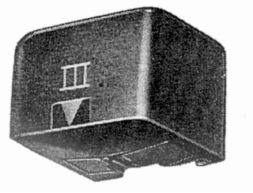

MK �V

■価格 16,500円■発電方式 バリレラ型■出力電圧 5mV■針圧 2g■再生周波数帯域 10-16,000Hz■チャンネルセパレーション 30dB■チャンネルバランス ■コンプライアンス (水平）15×10-6cm/dyne■直流抵抗 ■負荷抵抗 47kΩ■インピーダンス ■針先 楕円■自重 ■交換針 ■発売 〜1967年■販売終了 1968〜69年頃■備考 価格は1967年頃のもの
デッカのアーム専用。
デッカのインデックスへ